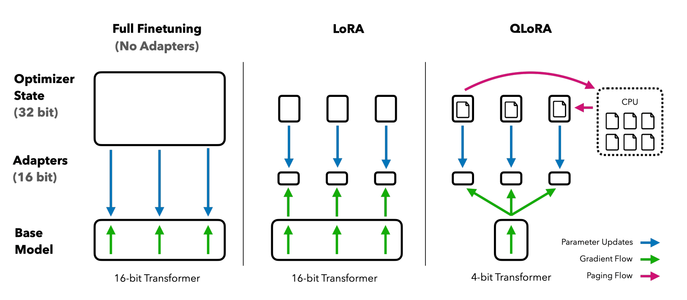

PEFT¶
Parameter-efficient fine-tuning is particularly used in the context of large-scale pre-trained models (such as in NLP), to adapt that pre-trained model to a new task without drastically increasing the number of parameters. It arises because regular fine-tuning can be costly, time consuming, require great amount of data, can lead to overfitting. Moreover, introducing additional layers or parameters during fine-tuning can drastically increase computational requirements and memory consumption.
How does it work ?¶
PEFT works by freezing most of the pretrained language model’s parameters and layers while adding a few trainable parameters, known as adapters, to the final layers for predetermined downstream tasks. PEFT adapts a pre-trained model to downstream tasks more efficiently. It reduces the # of trainable parameters reducing the memory needed by introducing adapters (More details on HF courses)
PEFT is often used during transfer learning, where models trained in one task are applied to a second related task. For example, a model trained in image classification might be put to work on object detection. If a base model is too large to completely retrain or if the new task is different from the original, PEFT can be an ideal solution
What are the available PEFT techniques ?
 Source: https://vinija.ai/nlp/parameter-efficient-fine-tuning/#which-peft-technique-to-choose-a-mental-model
Source: https://vinija.ai/nlp/parameter-efficient-fine-tuning/#which-peft-technique-to-choose-a-mental-model
When should I use PEFT over other methods ?¶
Parameter-efficient fine-tuning is useful due the following reasons:
- Reduced computational costs (requires fewer GPUs and GPU time).
- Faster training times (finishes training faster).
- Lower hardware requirements (works with cheaper GPUs with less VRAM).
- Better modeling performance. It allows the model to adjust for the most relevant parameters
- Less storage (majority of weights can be shared across different tasks).
- no catastrophic forgetting. Catastrophic forgetting happens when LLMs lose or “forget” the knowledge gained during the initial training process as they are retrained or tuned for new use cases. Because PEFT preserves most of the initial parameters, it also safeguards against catastrophic forgetting.
- Transformer models tuned with PEFT are much less prone to overfitting as most of their parameters remain static.
- Lower data need than full fine tuning (you can use 1 000 observations and already engage with improvement)
The next sections describe the main PEFT families.
Soft prompt techniques¶
As opposed to hard prompt (user input going into the model) soft prompt modifies how the model processes input tokens. Hard prompts are manually handcrafted text prompts with discrete input tokens; the downside is that it requires a lot of effort to create a good prompt. soft prompts are learnable tensors concatenated with the input embeddings that can be optimized to a dataset; the downside is that they aren’t human readable because you aren’t matching these “virtual tokens” to the embeddings of a real word If you want to know more about these techniques, Hugging Face has some fundamentals about it PEFT Prompting Guide
When should I use it ?¶
Prompt Tuning is a good choice when you have a large pre-trained LLM but want to fine-tune it for multiple different downstream tasks at inference time with minimal computational resources. It is also useful when you want to generate diverse and high-quality text outputs based on specific prompts When you want to fine-tune a pre-trained LLM for a specific downstream task and have limited computational resources when you want to modify the representation learned by the pre-trained model for a particular task.
IA3¶
(useful for multi-task fine tuning )
Lora/QLora which is one of the most used techniques to date¶
It decomposes Weights matrices into 2 matrices of lower dimension. Rank r the smaller the better optimized but the potentially higher loss of information —> Lora is not applied at pre-training yet only in FT. it is applied to all query, key, value and output projection. Usually r between 4 and 64 is efficient ; also need to parameter alpha = how much the product should contribute to the new metric during merging. Merging is necessary either prior to inference or during inference to serve the new combined weights. If you have multi-lora serving it’s better to serve at runtime but that means more latency (merging on the run) Another great explanation for LoRA can be found here : https://lightning.ai/pages/community/tutorial/lora-llm/
When should I use it ?¶
LoRA is a good choice when you want to fine-tune a pre-trained LLM for a specific downstream task that requires task-specific attention patterns. It is also useful when you have limited computational resources and want to reduce the number of trainable parameters in the model. Specifically:
- Memory Efficiency is Desired but Not Critical: LoRA offers substantial savings in terms of parameters and computational requirements. If you’re looking to achieve a balanced reduction in trainable parameters without diving into the complexities of quantization, LoRA is an ideal choice.
- Real-time Application: LoRA ensures no added inference latency, making it suitable for real-time applications.
- Task-Switching is Required: LoRA can share the pretrained model across multiple tasks, reducing the need for maintaining separate models for each task.
Serving Lora/Qlora¶
In short, LoRA, short for Low-Rank Adaptation (Hu et al 2021), adds a small number of trainable parameters to the model while the original model parameters remain frozen.
Lora/QLora decompose Weights matrices into 2 matrices of lower dimension. Rank r the smaller the better optimized but the potentially higher loss of information —> Lora is not applied at pre-training yet only in FT. it is applied to all query, key, value and output projection. Usually r between 4 and 64 is efficient ; also need to parameter alpha = how much the product should contribute to the new metric during merging. Merging is necessary either prior to inference or during inference to serve the new combined weights. If you have multi-lora serving it’s better to serve at runtime but that means more latency (merging on the run)
https://aws.amazon.com/fr/blogs/machine-learning/efficient-and-cost-effective-multi-tenant-lora-serving-with-amazon-sagemaker/ https://github.com/predibase/lorax
Source from Lora paper https://github.com/microsoft/LoRA?tab=readme-ov-file
What is QLora ?¶
Quantized-LoRA takes LoRA a step further by also quantizing the weights of the LoRA adapters (smaller matrices) to lower precision (e.g., 4-bit instead of 8-bit). This further reduces the memory footprint and storage requirements. The aim is to achieve similar effectiveness (i.e. model performance) while reducing even more the memory needed. The downside is that it requires more training time than LoRA method.
 Source: https://arxiv.org/pdf/2305.14314.pdf
I like this deep dive in the paper and explanations about QLoRA: https://mccormickml.com/2024/09/14/qlora-and-4bit-quantization/ In summary:
- the 4-bit quantization does not exactly mean that your weights go 4bits. It is a compression technique that allows us to store using less memory. It is used during fine tuning and inference. However, you still need to decompress the weights back to 16-bit to run the model. It doesn’t make the forward or backward calculations any easier or faster, or require any less memory. Math is still done at 16-bit precision, and all of the activations, gradients, and other optimizer states are all still stored as 16-bit floats.
- because of that, we have to store metadata which forces us to store more data. So it rathers achieve a 3.76x compression rate
- It works by leveraging three key aspects of neural network weights:
- Weight values are normally distributed.
- Large weight values are the most important (and 4Q preserves large weight values with high precision).
- Tiny weight values are irrelevant (and 4Q just rounds these to zero).
The vanilla formula to estimate the amount of GPU required to serve an LLM: ( A Number of parameters in the model * 4Bytes) / (32 / amount of bits that should be used for loading i.e. 16, 8 or 4) * 1.2 Note that 1.2 represents only a 20% overhead of loading additional metadata in the GPU memory
For instance, a 7 Billion parameter model using 4 bytes (32-bits) needs around 17 GB of memory.
Tips for fine tuning LLMs using LoRA¶
- Consistency in LLM Training: Despite the inherent randomness in training models on GPUs, the outcomes of LoRA experiments remain consistent across multiple runs, which is promising for comparative studies.
- QLoRA Compute-Memory Trade-offs: Quantized LoRA (QLoRA) offers a 33% reduction in GPU memory usage at the cost of a 33% increase in runtime, proving to be a viable alternative to regular LoRA when facing GPU memory constraints.
- Learning Rate Schedulers: Using learning rate schedulers like cosine annealing can optimize convergence during training and avoid overshooting the loss minima. While it has a notable impact on SGD optimizer performance, it makes less difference when using Adam or AdamW optimizers.
- Choice of Optimizers: The optimizer choice (Adam vs. SGD) doesn’t significantly impact the peak memory demands of LLM training, and swapping Adam for SGD may not provide substantial memory savings, especially with a small LoRA rank (r).
- Impact of Multiple Training Epochs: Iterating multiple times over a static dataset in multi-epoch training may not be beneficial and could deteriorate model performance, possibly due to overfitting.
- Applying LoRA Across Layers: Enabling LoRA across all layers, not just the Key and Value matrices, can significantly increase model performance, though it also increases the number of trainable parameters and memory requirements.
- LoRA Hyperparameters: Adjusting the LoRA rank (r) and selecting an appropriate alpha value are crucial. A heuristic that yielded good results was setting alpha at twice the rank’s value, with r=256 and alpha=512 being the best setting in one particular case.
- Fine-tuning Large Models: LoRA allows for fine-tuning 7 billion parameter LLMs on a single GPU with 14 GB of RAM within a few hours. However, optimizing an LLM to excel across all benchmark tasks may be unattainable with a static dataset.
- Importance of Dataset: The dataset used for fine-tuning is critical, and data quality is very important. Experiments showed that a curated dataset with fewer examples (like LIMA) could yield better performance than larger datasets (like Alpaca).
- Avoiding Overfitting: To prevent overfitting, one could decrease the rank or increase the dataset size, adjust the weight decay rate, or consider increasing the dropout value for LoRA layers.
- Factors Influencing Memory Usage: Model size, batch size, the number of trainable LoRA parameters, and dataset size can influence memory usage. Shorter training sequences can lead to substantial memory savings.
Sources: https://magazine.sebastianraschka.com/p/practical-tips-for-finetuning-llms https://lightning.ai/pages/community/lora-insights/
RLHF¶
Reinforcement Learning from Human Feedback (RLHF) comes first from Reinforcement learning fields. It composes with a try and error process where, given an environment, an agent makes some predefined actions in this environment based on observations. Actions are defined through a policy and will imply consequences which will be a reward (positive or negative) that will modify the state of the environment.
- A reward model is learnt from the human feedback
- Policy optimization: with the learned reward model, standard RM algos (PPO for instance) are used to optimize the policy which generates new behavior
- Iterative improvement: new behaviors lead to refinement of the reward model PB: computationnaly expensive and unstable leading to a simpler approach: direct preference optimization -
Reinforcement Learning through Human Feedback (RLHF) - A Crash Course¶
Overview¶
Reinforcement Learning through Human Feedback (RLHF) is a technique that integrates human input to align AI models with human preferences, particularly effective for tasks where defining clear metrics is challenging. Unlike Direct Preference Optimization (DPO), which directly uses preference data, RLHF involves training a reward model based on human feedback, which is then used in reinforcement learning to optimize the model.
Key Components of RLHF¶
- Reward Model Training: Humans provide feedback on AI-generated outputs, which is used to train a reward model. This model assigns scores to the outputs, indicating how well they meet human preferences.
- Reinforcement Learning: The reward model guides the AI's learning process, often using algorithms like Proximal Policy Optimization (PPO), to improve the model's performance iteratively.
- Iterative Process: The model generates outputs, receives feedback, and refines its behavior based on the reward model, continuing until desired performance is achieved.
Advantages of RLHF¶
- Generalization: RLHF is effective across diverse tasks, capturing human nuances that are hard to encode algorithmically.
- Rich Feedback: It leverages human expertise to refine AI outputs, ensuring alignment with complex, context-dependent preferences.
- Versatility: Suitable for tasks like text generation, where human judgment is essential for evaluating quality.
- Better control: we can discourage toxic (or any other unwanted behaviour) by modifying the reward
Disadvantages of RLHF¶
- High Resource Requirement: Collecting extensive human feedback can be time-consuming and costly.
- Consistency Challenges: Variability in human feedback can lead to inconsistencies in the reward model.
- Complexity: Involves training both a reward model and the AI policy, increasing complexity.
Comparison with DPO¶
- DPO: Simplifies the process by directly using preference data without a reward model, making it computationally efficient.
- RLHF: Offers potential for capturing more nuanced preferences but introduces complexity and resource intensity.
Choosing Between RLHF and DPO¶
- RLHF: Ideal for complex tasks where nuanced human preferences are crucial.
- DPO: Suitable for simpler tasks or when resources are limited, offering a streamlined approach.
Optimization Tips for RLHF¶
- Feedback Quality: Ensure high-quality, consistent human feedback to enhance the reward model's effectiveness.
- Active Learning: Prioritize feedback collection on outputs that provide the most information to improve the model efficiently.
- Algorithm Exploration: Investigate newer reinforcement learning algorithms beyond PPO to enhance performance and scalability.
Among other techniques you may find: PPO and DPO. Proximal Policy Optimization (PPO) was one of the first highly effective techniques for RLHF. It uses a policy gradient method to update the policy based on the reward from a separate reward model
https://huggingface.co/blog/rlhf https://toloka.ai/blog/rlhf-ai/ https://toloka.ai/blog/proximal-policy-optimization/
DPO¶
Fine tuning with preference alignment
- Creating preference datasets follows the same process as instruction dataset but with for each instruction a chosen answer and a rejected answer
- DPO datasets require fewer samples than instruction datasets
- DPO is less destructive than SFT
- Derives a closed form expression for the optimal policy under the standard RLHF objective of max. Expected reward subject to a KL divergence constraint against a reference policy
- Implemented as a binary cross-entropy loss function
- More computationally efficient than traditional RLHF (when trained with adapters, frozen and trained models don’t need to be separated)
- More stable during training and less sensitive to hyper parameter
Data Preference Optimization (DPO) is a fine-tuning technique used in Large Language Models (LLMs) that directly optimizes the model based on human preferences [1][2][3][4][5]. This approach eliminates the need for a separate reward model and instead uses comparative feedback data to refine the LLM. DPO has been shown to be a powerful approach to enhancing machine learning models by directly incorporating user feedback, enabling the creation of models that better align with human expectations and needs [1].
The key benefits of DPO include its simplicity, efficiency, and direct control over LLM behavior [3]. By eliminating the need for a complex reward model, DPO significantly reduces the computational cost of fine-tuning, making it a valuable asset for developers looking to quickly upgrade their language models [2]. Additionally, DPO allows users to have a more direct influence on the LLM's behavior, guiding the model towards specific goals and ensuring it aligns with their expectations [3].
DPO has been compared to other fine-tuning techniques, such as Reinforcement Learning from Human Feedback (RLHF) [2][3]. While RLHF allows for more complex and nuanced reward structures, DPO's simpler approach can be beneficial for tasks requiring rapid iteration and feedback loops [3]. DPO has also been shown to outperform RLHF in certain scenarios, particularly regarding sentiment control and response quality in tasks like summarization and dialogue [3].
However, DPO also has its challenges, such as the risk of overfitting [4][5]. To prevent overfitting, it is essential to collect diverse high-quality data that covers a wide range of preferences and scenarios [5]. Additionally, DPO may not be suitable for tasks that require precise control over the LLM's output, where RLHF's flexibility in defining rewards may be beneficial [3].
In conclusion, DPO is a promising fine-tuning technique that offers a simple, efficient, and direct approach to optimizing LLMs based on human preferences [1][2][3][4][5]. While it has its challenges, DPO has the potential to make LLM fine-tuning faster, cheaper, and more stable, driving innovation in the field of artificial intelligence [2]. The choice between DPO and other fine-tuning techniques, such as RLHF, depends on the specific task, available resources, and desired level of control [3].
References:
[1] Source 1: Collecting Preference Data [2] Source 2: Can DPO scale to a real preference dataset? [3] Source 3: D.P.O: A Simple and Direct Approach [4] Source 4: Alignment without Reinforcement Learning [5] Source 5: What is DPO?
https://medium.com/@mauryaanoop3/detailed-guide-on-dpo-fine-tuning-027815d15837 https://huggingface.co/blog/dpo-trl https://medium.com/@sinarya.114/d-p-o-vs-r-l-h-f-a-battle-for-fine-tuning-supremacy-in-language-models-04b273e7a173 https://toloka.ai/blog/direct-preference-optimization/ https://huggingface.co/blog/pref-tuning
Direct Preference Optimization (DPO) Explained¶
Direct Preference Optimization (DPO) is a method for fine-tuning large language models (LLMs) to align their outputs with human preferences. Unlike traditional reinforcement learning (RL)-based approaches, DPO simplifies the process by directly incorporating preference data into the training process. This reduces complexity and computational requirements while maintaining or improving performance. Here's an overview, comparison with other methods, and guidance on when to use DPO.
Overview of DPO¶
DPO aligns LLMs with human preferences by using preference data from human evaluators. It directly optimizes the model's policy based on this data, eliminating the need for complex reward modeling or extensive hyperparameter tuning. This streamlined approach has been shown to match or exceed the performance of more complex methods like Reinforcement Learning from Human Feedback (RLHF), particularly in tasks such as sentiment control, summarization, and dialogue generation [1][2].
Advantages of DPO¶
- Simplicity: DPO avoids the complexity and instability of RLHF by directly using preference data in supervised learning [2][3].
- Computational Efficiency: It reduces computational overhead by avoiding the need for multiple model instances and extensive hyperparameter tuning [3].
- Performance: DPO has demonstrated comparable or superior performance in aligning LLMs with human preferences, particularly in controlling the sentiment of generated outputs [1][2].
Differences from Other Fine-Tuning Techniques¶
- Reinforcement Learning from Human Feedback (RLHF): RLHF involves multiple steps, including reward modeling and policy optimization, which introduces complexity and computational overhead. DPO, on the other hand, streamlines this process by directly optimizing the model using preference data [2][3].
- Conditional Supervised Fine-tuning: This method relies on conditional prompts to guide the model's outputs. While effective, it may require additional fine-tuning and does not directly use preference data for optimization [3].
- Other RL-Based Methods: These methods often involve complex reward functions and multiple training iterations. DPO simplifies this by directly incorporating preference data, reducing the need for extensive hyperparameter tuning and multiple model instances [2][3].
When to Use DPO¶
DPO is particularly relevant in scenarios where simplicity, computational efficiency, and effective alignment with human preferences are priorities. It is ideal for:
- Resource-Constrained Environments: When computational resources are limited, DPO's reduced overhead makes it a practical choice.
- Rapid Deployment: Its straightforward implementation allows for quicker fine-tuning and deployment of models aligned with human preferences.
- Preference-Based Tasks: For tasks requiring nuanced control over model outputs, such as sentiment management or dialogue generation, DPO's performance advantages make it a strong candidate [1][2].
sebastien links: https://github.com/rasbt/LLMs-from-scratch/tree/main/ch07/04_preference-tuning-with-dpo
Group Relative Policy Optimization (GRPO)¶
GRPO groups similar samples together and compares them as a group. The group-based approach provides more stable gradients and better convergence properties compared to other methods.
GRPO does not use preference data like DPO, but instead compares groups of similar samples using a reward signal from a model or function.
GRPO is flexible in how it obtains reward signals - it can work with a reward model (like PPO does) but doesn’t strictly require one. This is because GRPO can incorporate reward signals from any function or model that can evaluate the quality of responses.
GRPO produces multiple solutions at once and group them together. The evaluation is made at the group with multiple evaluation possible. The good answer are kept while the bad answer are used to move away the model from these. For stability, KL divergence metrics are used to tune how fast moving away from existing solutions.
It looks at multiple solutions together rather than comparing just two at a time The group-based normalization helps prevent issues with reward scaling The KL penalty acts like a safety net, ensuring the model doesn’t forget what it already knows while learning new things
Limitations: Generation Cost: Generating multiple completions (4-16) for each prompt increases computational requirements compared to methods that generate only one or two completions. Batch Size Constraints: The need to process groups of completions together can limit effective batch sizes, adding complexity to the training process and potentially slowing down training. Reward Function Design: The quality of training heavily depends on well-designed reward functions. Poorly designed rewards can lead to unintended behaviors or optimization for the wrong objectives. Group Size Tradeoffs: Choosing the optimal group size involves balancing diversity of solutions against computational cost. Too few samples may not provide enough diversity, while too many increase training time and resource requirements. KL Divergence Tuning: Finding the right balance for the KL divergence penalty requires careful tuning - too high and the model won’t learn effectively, too low and it may diverge too far from its initial capabilities.
Instruction tuning¶
Instruction Tuning Instruction fine-tuning (IFT) is a type of SFT leveraged in LLMs to improve their ability to follow instructions and generate more accurate and relevant responses. This technique involves training the model on a dataset of prompts followed by ideal responses, guiding the model to better understand and execute various types of instructions. (FLAN) was the first to introduce instruction tuning which finetunes the model on a large set of varied instructions that use a simple and intuitive description of the task, such as “Classify this movie review as positive or negative,” or “Translate this sentence to Danish.” “Creating a dataset of instructions from scratch to fine-tune the model would take a considerable amount of resources. Therefore, we instead make use of templates to transform existing datasets into an instructional format.” (source) The image below shows a representation of how the instruction dataset is generated via templates from the original FLAN paper:
How did we evolve between different techniques ?¶
For most advanced readers who want to have a deeper understanding on the how did we evolve between all of these techniques, I recommend https://lightning.ai/pages/community/article/understanding-llama-adapters/
How to choose one technique over the other ?¶
https://docs.unsloth.ai/get-started/fine-tuning-guide/lora-hyperparameters-guide